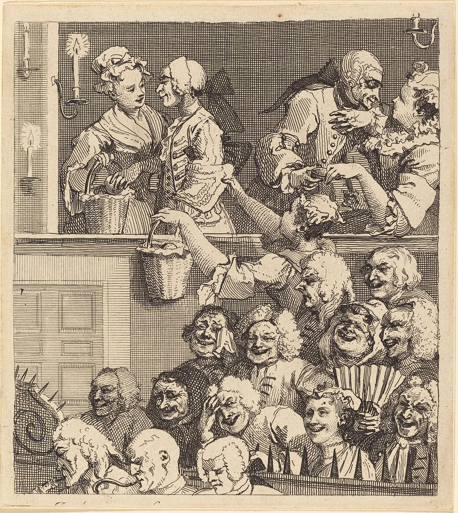

Sessão 10 / Mostrar, defender e rever
O que fica depois da mostra
Consegues defender a peça diante de quem a vê pela primeira vez?
Começar
Recupera
De memória, sem abrir o caderno.
De memória
Regra de uso ou intenção vaga: qual é a diferença?
Confirmar
A regra tem verbo e condição: cumpre-se ou quebra-se.
Que peça do manifesto falta à fachada da escola?
Confirmar
O inimigo: a fachada só pede, não recusa nada nem ninguém.
Qual é a pergunta mais difícil que te podem fazer na defesa?
Vê
Observa primeiro. Lê depois.
Material 1 de 3: O público de Hogarth, outra vez
Na sessão 02, contaste quem não olhava para o palco. Hoje o palco é vosso: para onde vai olhar o vosso público?

Material 2 de 3: O manifesto da turma
Lê em silêncio. Marca a regra que vais cumprir primeiro.
Material 3 de 3: O programa da mostra
Confirma o teu lugar e a tua tarefa. As notas de autoria vêm da casa 5.
Obras e materiais
Decide
Primeiro em silêncio, cada pessoa. Depois em grupo.
Sem ecrã
Primeiro, em silêncio
Assinas? Se não, ou se assinas com reserva, que regra mudarias, e porquê?
Três minutos. Escreve a tua resposta e uma razão no cartão de decisão. Depois, uma volta: cada pessoa lê o seu cartão, sem comentários.
Depois, em grupo
- Façam uma última volta à defesa de dois minutos.
- Decidam quem responde a quê.
- Escolham a pergunta da casa 4 que vão fazer ao público.
No fim, registem a decisão e uma razão que ficou vencida.
Comparar razões
Defender não é vencer: é mostrar que houve uma razão, e aceitar que a razão pode mudar.
Faz
A mostra, a defesa e o manifesto.
Em público
- A mostra: cerca de oito minutos por grupo, seguidos de defesa.
- O manifesto é assinado e afixado. A assinatura é livre e pode levar uma reserva escrita.
- O público responde às perguntas da casa 4.
Rever com outra pessoa
Depois da mostra, cada pessoa escreve uma alteração que faria e mostra-a a quem esteve no público.
GuardarCasa 10 do mapa do Contra-feed: O que o público viu
O que o público viu; uma revisão; Vi, Situei, Fiz.
- 1A regra (casa anterior)
- 2O sinal e o custo (casa anterior)
- 3As regras da casa (casa anterior)
- 4A pergunta e o público (casa anterior)
- 5Os meios e os créditos (casa anterior)
- 6O caso (casa anterior)
- 7Conceito e guião v1 (casa anterior)
- 8Ensaio e guião v2 (casa anterior)
- 9Defesa e manifesto (casa anterior)
- 10O que o público viu (casa de hoje)
Contorno cheio: casas anteriores. Preenchida: a casa de hoje.
Leva
Em papel, antes de sair.
Em papel
Em papel, antes de sair
Numa frase: o que fica depois de a mostra acabar?
As três perguntas do Contra-feed
Responde a cada uma com «sim», «em parte» ou «ainda não», e uma linha a dizer porquê.
- Vi
- Consegui olhar para uma imagem ou um caso e dizer o que lá está antes de dizer o que acho?
- Situei
- Consegui ligar o que vi ao seu tempo, a quem o fez e a quem serve?
- Fiz
- Produzi alguma coisa (um ensaio, uma peça, uma decisão defendida em voz alta) que outra pessoa pôde pôr em causa?
Confirma
- Dizes uma coisa que mudou depois da mostra.
- Respondes às três perguntas, com uma razão em cada.
- Identificas o teu contributo.
O registo fica neste aparelho.